| 日付 | 2016年5月22日（日） |
|---|---|
| 山域 | 日光周辺 |
| メンバー | 家族（妻、長女・5歳、長男・2歳） |
| 山行形態 | 子連れ日帰り |
| アクセス | 車、バス |
| ルート (Map) | 湯元温泉 (9:10) - (10:03) 湯滝 - (11:01) ベンチ (11:36) - (12:42) 赤沼トイレ - (12:51) おやつ休憩 (13:19) - (13:42) 竜頭の滝 - (14:15) 竜頭の滝バス停 |
今週末は快晴予報。そろそろ梅雨入りしそうなので、これが梅雨前の最後の山行になりそうだ。
行先は久々の日光にする。日光に行くのは3年半ぶりだ。
日光は大きな山が多く、子連れではなかなか登れないため、
山には行かず、湯滝から戦場ヶ原を歩いてみることにする。
湯元温泉の駐車場に到着する。標高1480m。
ここは日光の最奥地。今回は群馬経由ルートで日光入りしたのだが、とにかく遠い。
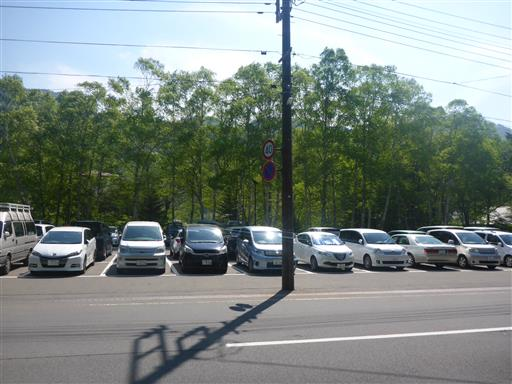
駐車場は湯ノ湖の畔にある。湯ノ湖は噴火によってできた堰止湖だ。
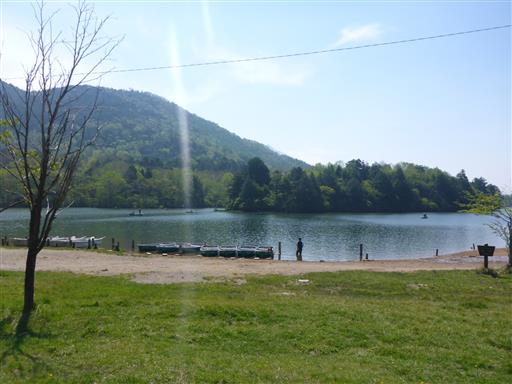
周囲を山に囲まれた、静かでよい場所だ。
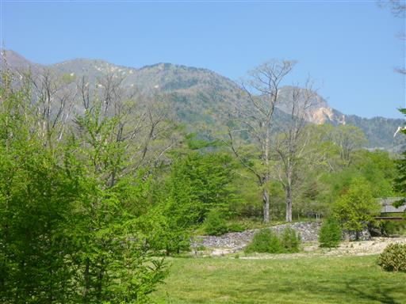
この辺りは白樺の木が見られる。
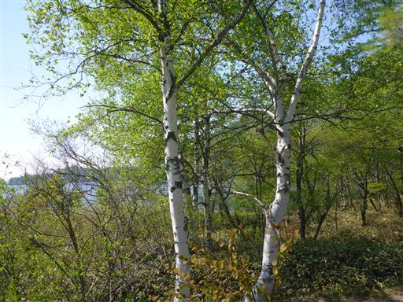
準備を整えて早速歩き始める。息子はキャリアに乗りたいと言わず歩き出す。
だいぶ歩くことに慣れてきたようだ。
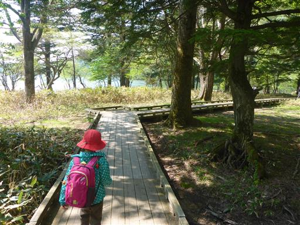
湯ノ湖の展望台に到着。
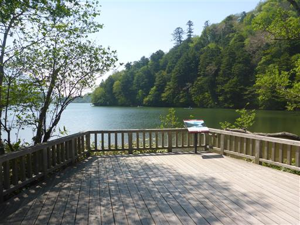
周囲3km弱の小さな湖だ。遠くに男体山の姿が見えている。
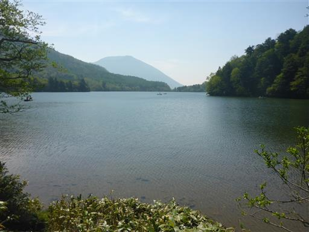
湖の中に入って釣りをしている人があちらこちらで見られる。
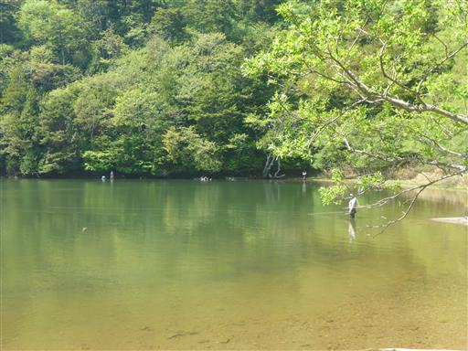
湖を取り囲む遊歩道を歩いて、北から南に半周する。
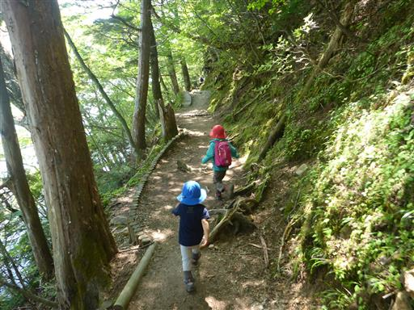
湖畔にはシャクナゲの花が咲いている。
ツツジの花はほぼ終わっていて、今はシャクナゲの季節だ。

息子は木道をまたいで遊びながら歩いている。
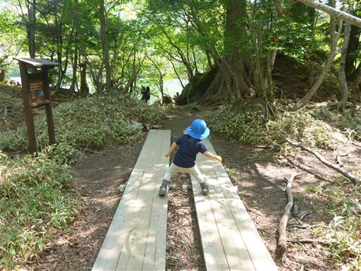
湯ノ湖から水が流れ出している。ここが湯川の始まりだ。
ここから中禅寺湖まで流れ下って行く。
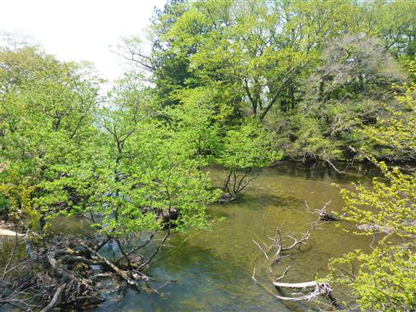
湯川にかかる橋を渡る。
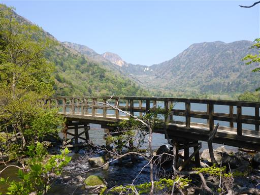
湯川はすぐに急流となり、滝になって流れ落ちていく。
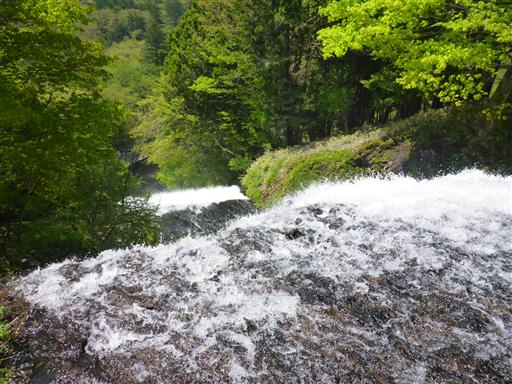
滝の隣に付けられた階段を下っていく。
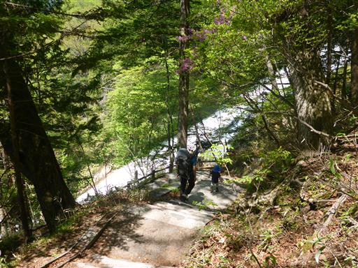
湯滝の中腹で滝を展望できる。
垂直に落ちる滝ではないが、水の流れが非常に美しい。
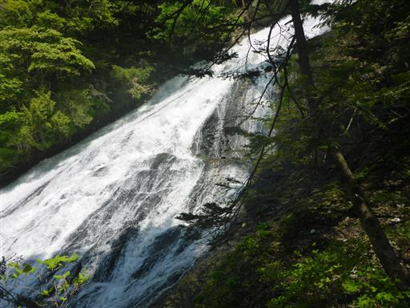
一番下まで下りてくる。ここは観光客で一杯だ。
湯ノ湖から歩かなくても、側に観光客用の駐車場がある。
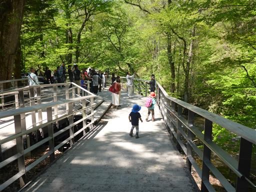
観瀑台から湯滝を見上げる。落差、水量とも申し分のない見事な滝だ。
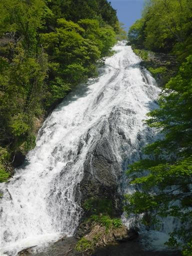
さらに湯川に沿って下流方向へ歩いて行く。途端に人影が少なくなる。
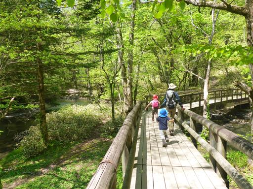
この辺りは所々に大木が見られる。
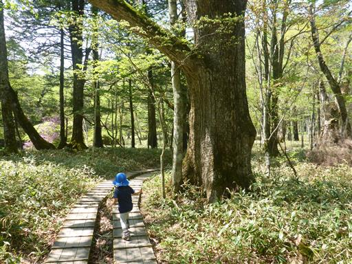
道はしばらく川から離れる。周囲には笹原が広がっている。
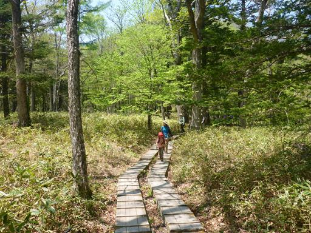
しばらく歩くと再び川沿いに出てくる。ここでも釣りをしている人を見かける。
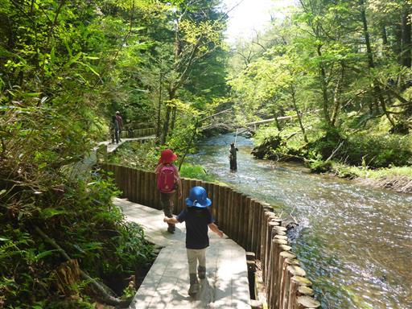
遊歩道を覆い尽くす木の根っこ。かなり大きな根だ。
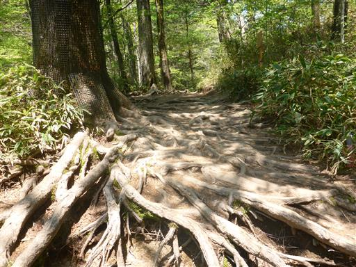
周囲は淡い緑に覆われている。標高が高いので、この辺りはまだ新緑の季節だ。
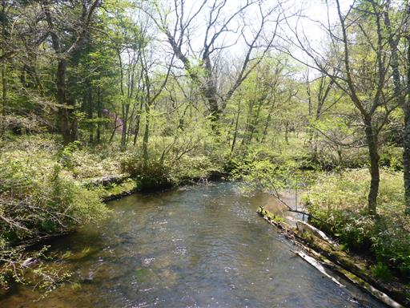
途中でベンチとテーブルがたくさん並んでいたので、ここで昼食をとる。
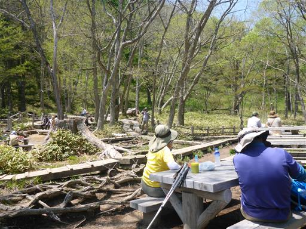
ここの水はきれいで非常に澄んでいる。
水が流れてくる方向を見ても川は無く、湧き出している水のようだ。

昼食を取ったらさらに南下して戦場ヶ原を目指す。
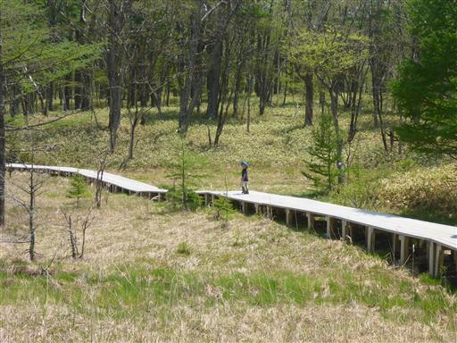
戦場ヶ原の一角に到着。小さな川が流れている。
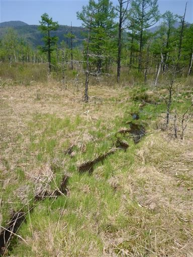
木道の真ん中に木が立っている。木道には穴が開けられている。
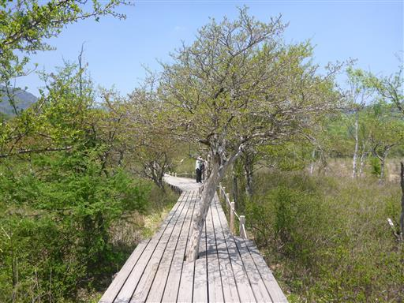
戦場ヶ原からは男体山が大きく見える。非常に存在感のある山だ。
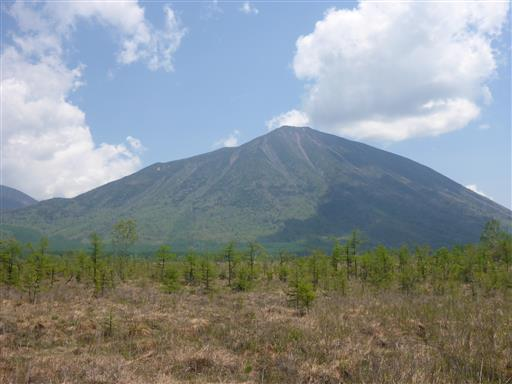
こちらは太郎山と大真名子山。全て火山によってできた山だ。
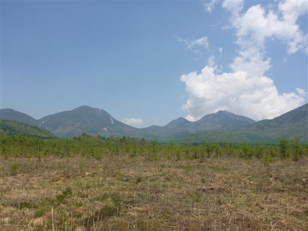
倒木の白い根っこ。美しいオブジェのようだ。
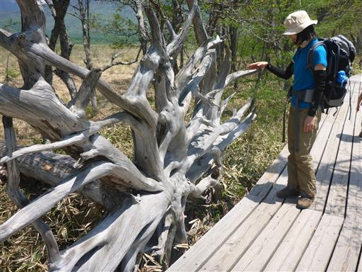
この辺りの川は赤い。何の影響で赤くなっているのだろうか？
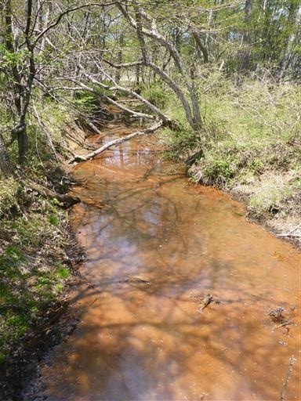
一面ワタスゲに覆われている。ワタスゲを見るのは久しぶりだ。
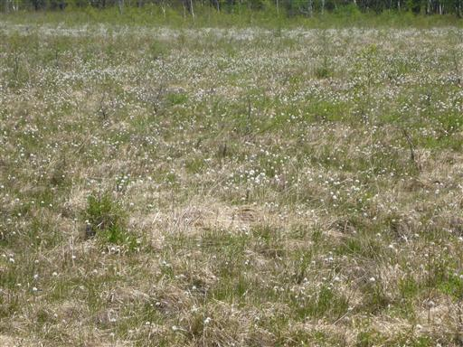
湯川の水は濁っている。湯川に沿ってずっと歩き続けているが、
あまり清流という感じがしない。濁りは火山の影響だろうか？
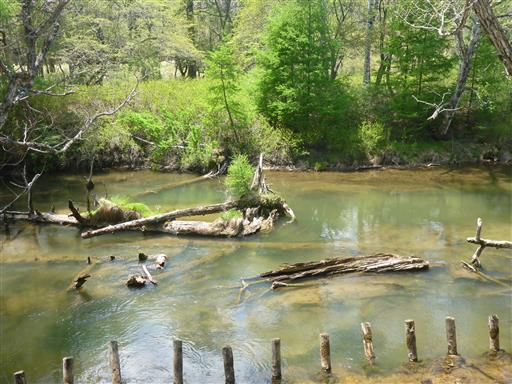
娘がトイレに行きたいと言い出したので、
一旦車道に出て観光客用のトイレを利用する。
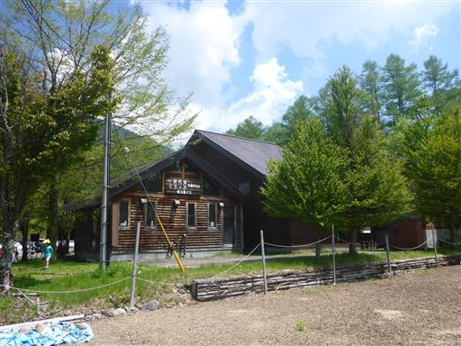
ゴールの竜頭の滝にだいぶ近くなってきた。
戦場ヶ原～竜頭の滝は再び観光客の少ない区間。
川の畔に下りておやつ休憩をとる。
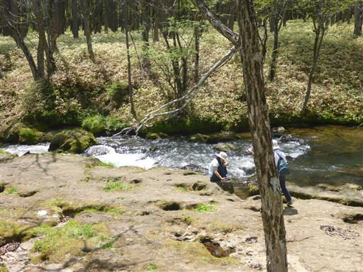
息子はほとんどキャリアに乗らず元気に歩いている。
アップダウンが無いとはいえ、長い距離を歩けるようになった。
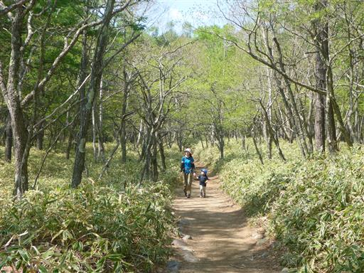
わずかに残ったツツジの花が咲いている。
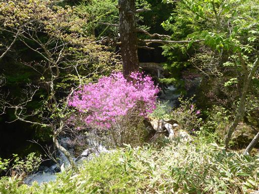
竜頭の滝の上流部に到達する。再び水の流れが激しくなってくる。
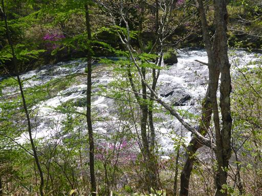
観瀑台は人で溢れている。よく見ると修学旅行か何かのようで
15分ほど待つと一気に静かになった。
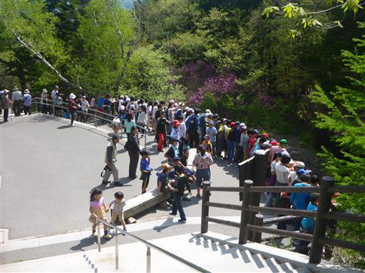
竜頭の滝。湯滝と同様、岩を流れ下る美しい滝だ。
湯滝、竜頭の滝、華厳の滝は奥日光三名瀑と呼ばれている。
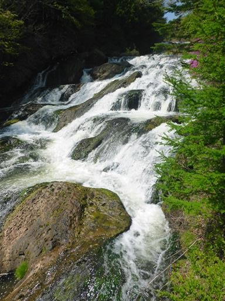
滝によって削られた岩溝を流れ落ちていく。ここで水は二手に分かれる。
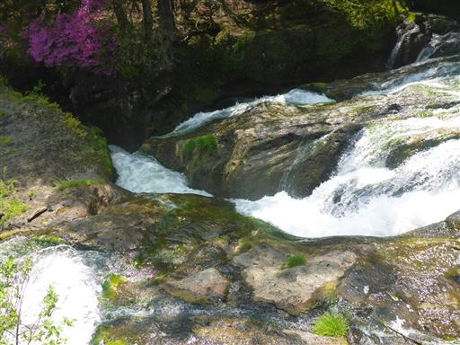
周囲を一羽の鳥がうろうろしている。
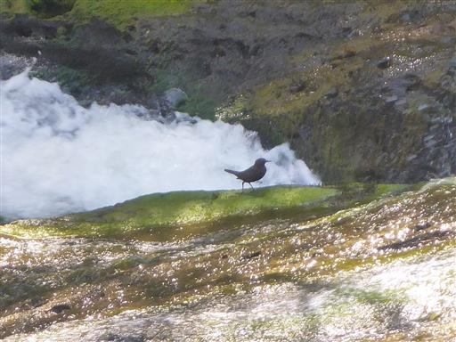
あとは竜頭の滝の側の階段を下って行く。
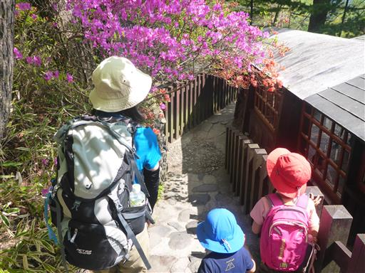
下りきった場所が竜頭の滝の終点だ。
二手に分かれた水がここで合流している。
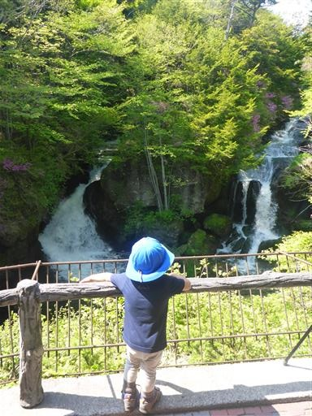
疲れたので龍頭之茶屋でアイスを食べて一息つく。
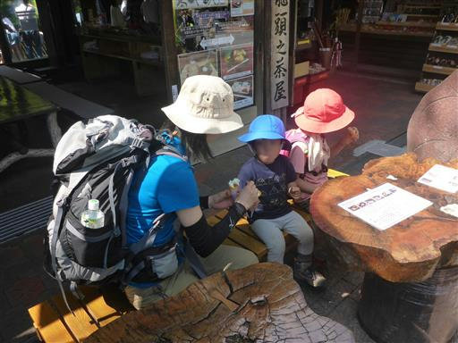
竜頭の滝バス停に到着。標高1290m。
あと少しで中禅寺湖まで行けるのだが、本日はここまでとする。
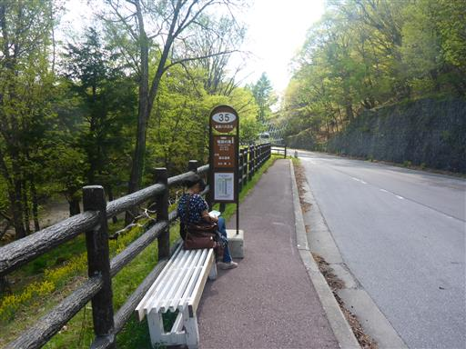
バスに乗って湯本温泉に戻る。バスに乗るとあっという間だ。
山に登らないのはもったいないくらいの晴天だったが、
これまで歩いたことのない湯滝、戦場ヶ原を歩くことができ、美しい風景を堪能できた。
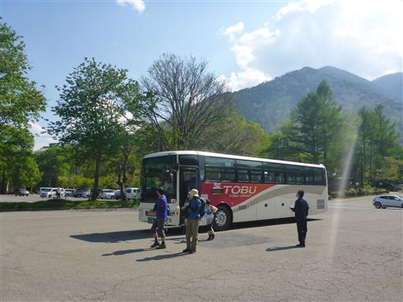